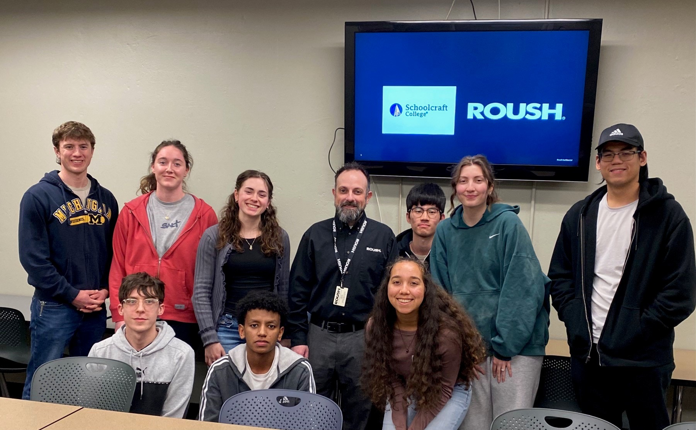
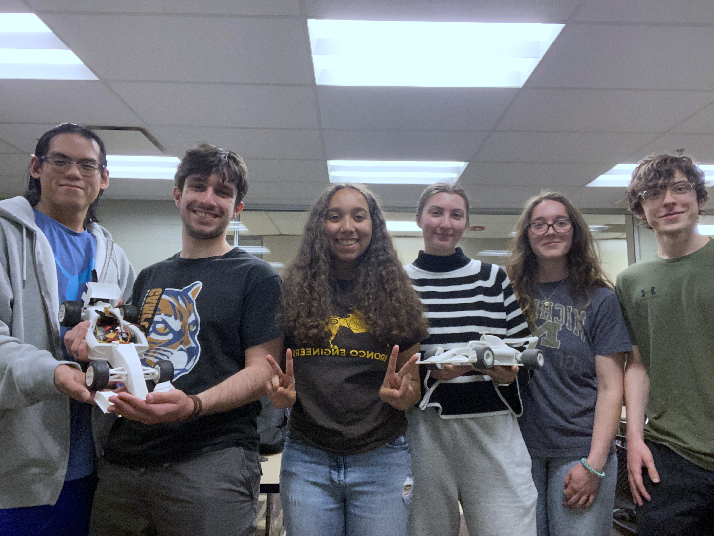
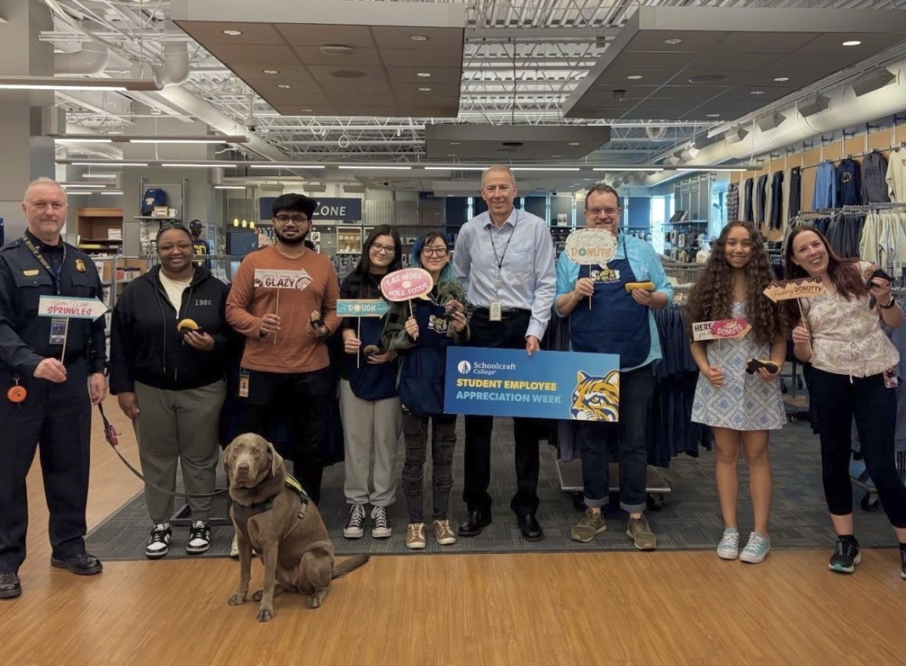
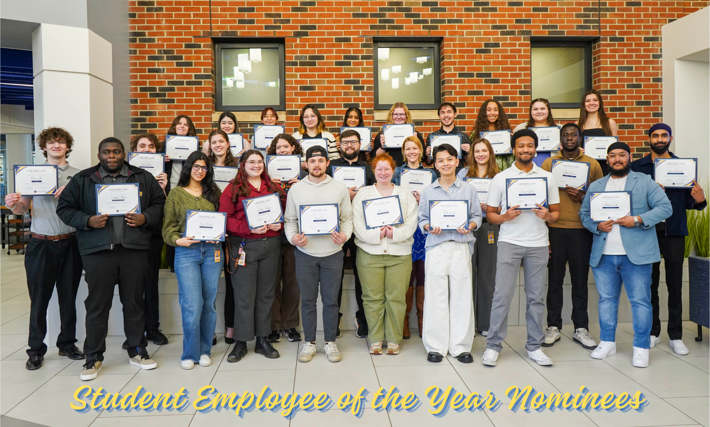

- Revitalized the engineering club from inactivity and served as the president.
I started the club as a non-engineering major because I wanted to explore engineering as an option. When I found out the club was inactive, I thought to myself, "Welp, someone's got to do it. Might as well be me." I learned so much about being a leader, and I tried to set an example by being very vocal whenever I didn't understand something.
The club eventually grew to 17 active members in just one academic year. We also welcomed guest speakers from Ford, Roush, and Bosch, and even went on a field trip to Bosch. This club became such an important community to me while I was at Schoolcraft.


- Worked as a student employee at the campus help desk
I began applying for jobs on campus after my first semester, hoping to gain some experience and clarity. After applying for an office position, I received an email: “Hi Sara, the position you applied for was filled. However, a position opened up in IT, would you be interested?”
Thus, I found myself at an interview for a job that I had no qualifications for. At the time I had no technical experience at all; most of my family had a career in business, and my own academic background was in the arts. I simply couldn’t imagine a scenario in which I would actually be offered the job. As the interview came to a close, I was caught completely off guard when I heard, “We're gonna give you the position”.
While working at the help desk, I was able to help faculty on campus troubleshoot various technology issues among projects that would be given to me. This job was so fun! I got to go on field trips around the campus, learn about how various technology worked, and connected with so many individuals on campus. I was also nominated for student employee of the year in the "Social Impact" category. 🙂 This job made me feel capable of pursing a technical career and helped me learn so much about myself!


- Selected to attend the national conference for college women student leaders
The AAUW Livonia sponsored a small handful of female students from an applicant pool from Schoolcraft to attend NCCWSL. We were flown to Maryland, where attendees stayed in dorms throughout the 3-day event. The conference involved various seminars and speakers that highlighted leadership!
- Volunteered!
Schoolcraft hosts an annual multicultural fair, in which I volunteered twice! The first year I volunteered to paint an art piece that represented black culture to be set up near the Charles H. Wright museum. I was able to help out with the booth as well, giving guests fun facts about black history.
The second year of the fair, I volunteered to represent Poland. I dressed up in struj and passed out pierogi to fair attendees. I also created a slideshow and taught basic Polish vocabulary to those who were interested.